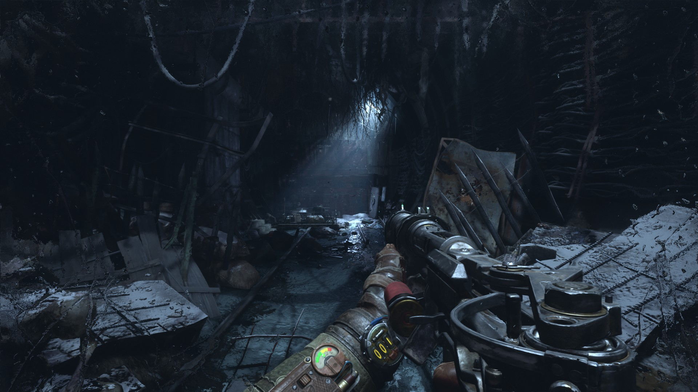

Como Aleksei se dirige a la estación de Polis, decide que debería de comprar algo de equipo para el viaje. Comprando así una escopeta vieja, unos botiquines, una linterna, un poco de comida y un par de balas; aunque no es mucho, es lo suficiente para sobrevivir el viaje. El comerciante le suelta un comentario que le heló la piel, "¿Vas a Polis? si te quedas sin municiones, siempre podrías contar con los pobres diablos que no pudieron regresar jaja, toma lo que puedas si no te quieres quedar con ellos". Los rumores de los túneles son ciertos, aunque no se sabe exactamente qué es lo que acecha en ellos, se dice que hay criaturas mutantes, bandidos y hasta fantasmas. Aleksei se siente un poco nervioso, pero también sabe que no tiene otra opción, debe llegar a Polis para encontrar respuestas sobre lo que le sucedió a las personas desaparecidas. Así que con su equipo en mano, se adentra en los túneles del metro, listo para enfrentar cualquier peligro que pueda encontrar en su camino hacia Polis.
El camino es muy peligroso, todos los túneles se encuentran en un estado deplorable. A lo largo de su camino se encuentra con una máscara de gas abandonada, junto con un par de cadaveres de una época ya casi olvidada. Aleksei se pregunta qué les sucedió a esas personas, y si él podría terminar de la misma manera. Recuerda lo que le dijo el comerciante, por lo que decide tomar la máscara de gas, aunque no sabe si le servirá de algo, al menos podría protegerlo de los gases tóxicos que a menudo se encuentran en los túneles del metro. A medida que avanza, comienza a escuchar ciertos ruidos extraños, como si algo se moviera en la oscuridad. Aleksei se detiene por un momento, tratando de identificar el origen de los sonidos, pero no puede ver nada en la penumbra.